Fire Hydrants in Macao
I couldn't find much information about Macao fire hydrants online, probably because I don't speak Portuguese. I did try to search online for fire hydrants in Macao (in Portuguese), but there aren't much useful results. So basically everything you will read here is based on information provided in the Fire Services Museum and from my own observations when I wandered around Macao streets.
Generally speaking, there are 3 Cantonese words Macao use to refer to fire hydrants:
- 消防栓 - standard Chinese translation for fire hydrants
- 街井 - literally means "street well", because you get water from underground on the street...I think. Also used in Hong Kong.
- 火躉 - Only applies to two types of hydrants according to the museum, I will mention that later. I honestly don't know why they use this name, because the first character means fire but second character means foundation or support...fire hydrants are meant to extinguish a fire not sustain it, so I am really confused. It seems they only use this word when the hydrant is large, not just some pipes sticking out from the ground. But the way the Fire Services Museum refers to hydrant types is really inconsistent so I can't say for sure.
A fire hydrant
Referred to as "A fire hydrant" in the Fire Services Museum (I am not kidding), this type is basically the same as Round Head in Hong Kong. I will just call the Macao ones Round Heads otherwise it will be confusing. This is one of the two types that is referred to by the Chinese word 火躉 in the museum. Most Round Heads I saw in the urban areas have prefix MH (Macao Hydrant?), but there are ones without the MH prefix.
Examples can be found with different types of caps screwed onto their nozzles, including caps with only handles, caps with only nuts, and caps with both nuts and handles. There appears to be four different types of paint being applied onto these hydrants: bright red, matte red, vermilion, and matte vermilion.
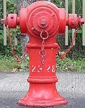 |
| bright red Round Head 2328, caps have both nut and handles |
| Lotus Cycle Track, Cotai |
| Photo taken in Y2026-M04 |
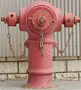 |
| An unnumbered matte red Round Head, caps have both nut and handles |
| Rua de Viseu near Jockey Clube LRT station |
| Photo taken in Y2026-M04 |
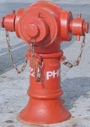 |
| vermilion Round Head PH0022, caps only have handles |
| outside HZM Bridge Macao checkpoint arrivals building |
| Photo taken in Y2026-M04 |
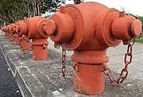 |
| seven unnumbered matte vermilion Round Heads |
| Lotus Cycle Track near the ramp down to Túnel para o Novo Campus da Universidade de Macau, Cotai |
| Photo taken in Y2026-M04 |
Gooseneck
Referred to as "Street hydrant shape gooseneck" in the Fire Services Museum, this type is mostly the same as the Hong Kong Swan Neck. However, I spotted three slightly different variants: single pipe with a wide curve (the type you would see in Hong Kong), single pipe with a tight curve, and two-sections (curve and straight). So far I have found Goosenecks painted bright red and matte red. All the Goosenecks I saw in the urban areas have prefix MG (Macao Gooseneck?).
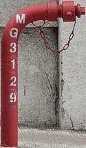 |
| matte red Gooseneck MG3129, cap has both nut and handles |
| Rua de Sacadura Cabral, Macau Peninsula |
| Photo taken in Y2026-M04 |
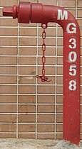 |
| matte red Gooseneck (tight curve variant) MG3058, cap only has nut |
| Estrada do Repouso (somewhere between Rua da Barca and Rua do General Galhardo), Macau Peninsula |
| Photo taken in Y2026-M04 |
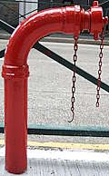 |
| bright red Gooseneck (two section variant) MG3169, cap only has handles and is not as deep as other caps (threadings are exposed) |
| Rua de Ferreira do Amaral opposite of Rua de Horta e Costa, Macau Peninsula |
| Photo taken in Y2026-M04 |
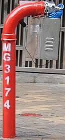 |
| bright red Gooseneck (two section variant) MG3174, with water pipe pressure test equipment |
| Calçada do Gaio / Rua de Ferreira do Amaral, Macau Peninsula |
| Photo taken in Y2026-M04 |
Even though the English name of this type of hydrant is different between Hong Kong and Macao, the Chinese name is actually the same in both cities, being "鵝頸". The Portuguese name mentioned in the museum, Cisne, means Swan. Speaking of the museum, the specific Gooseneck displayed there is referred to as "Boca de Incêndio Privativa Cisne na via pública" in Portuguese, which means it is a "private Swan type fire hydrant on a public street"...which doesn't make that much sense when you think about it. A private hydrant on a public street...? Maybe it is just me thinking too much.
Mansions a hydrant
Referred to as "Mansions a hydrant" (don't ask me why the a is there) in the Fire Services Museum, this type is mostly the same as the type found in Hong Kong on viaducts. As its name suggests, it is probably meant to be installed mainly in buildings. But just like in Hong Kong, this type can be seen oudoors as street hydrants.
There are some examples scattered along the pedestrian footpath between Praça do Tap Siac and Avenida de Sidónio Pais. All examples I spotted have an extra section that makes the entire hydrant point slightly downwards, which is not present on examples I found in Hong Kong. It should also be noted that none of the Macao Mansions hydrant examples I have seen so far have street hydrant caps attached to the nozzles, they all had instantaneous outlet attachment commonly seen on indoor hydrants.
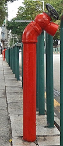 |
| Several unnumbered Mansions hydrants on the pedestrian sidewalk |
| Avenida de Sidónio Pais near Praça do Tap Siac |
| Photo taken in Y2026-M04 |
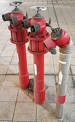 |
| two fire service inlets and a Mansions hydrant |
| Taipa Ferry Terminal |
| Photo taken in Y2026-M04 |
New type a fire hydrant
Referred to as "New type a fire hydrant" (...just don't think too much about the a) in the Fire Services Museum, this type is (or was) manufactured by the French company Bayard, the company logo of which is visible on the shell of the hydrants. While this type closely resembles the Emeraude hydrant model manufactured by Bayard, there are some external differences that makes me think this is the predecessor to (or an early design of) the current Emeraude models, but I am unable to find the name for this hypothetical predecessor model / design. This is the other type that is referred to by the Chinese word 火躉 in the museum. All hydrants of this type I managed to find also have prefix MH (presumably Macao Hydrant), the same as Round Heads.
This type doesn't look like a fire hydrant from the outside because of the shell, but you can tell from its bright red shell and the yellow arrows on top, and also the fire hydrant numbers. You can find examples easily along Avenida Comercial de Macau and Avenida Panorâmica do Lago Nam Van near Nam Van Lake. I also found at least one on Avenida Doutor Mário Soares, so there might be more along this road too. Examples probably exist in other areas but I am yet to locate them.
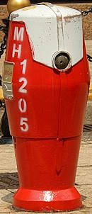 |
| Bayard Emeraude (?) MH1205 |
| Avenida Comercial de Macau outside Grand Emperor Hotel |
| Photo taken in Y2026-M04 |
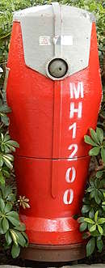 |
| Bayard Emeraude (?) MH1200 |
| Avenida da Praia Grande at Travessa do Padre Narciso |
| Photo taken in Y2026-M04 |
Is this a real fire hydrant?
So I was in the Studio City resort in Cotai looking for a supermarket, and I stumbled upon this thing outside the restaurant Kiku. I have no idea what model this is, or if it was even a real fire hydrant prior to being displayed in Studio City. I think this might not be a real hydrant because of the screws seen on the nozzles, but I feel like sharing this here anyway. The small plaque above the front outlet nozzle says "display only".
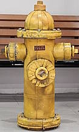 |
| outside restaurant Kiku, in Studio City Macao resort, Cotai |
| Photo taken in Y2026-M04 |
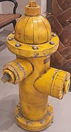 |
| outside restaurant Kiku, in Studio City Macao resort, Cotai |
| Photo taken in Y2026-M04 |
Seven hydrants at the Lotus Cycle Track
If you search "Macao fire hydrants" in DuckDuckGo or Google, you will probably see this in the first few images: a row of seven Round Heads side by side. This is so bizarre that DuckDuckGo's AI image filtering even thinks this is AI-generated, but no, these hydrants actually exist. They are located on the Lotus Cycle Track in Cotai near the ramp down to Túnel para o Novo Campus da Universidade de Macau.
But that is not the full story, if you look at where the Round Heads are facing, you can also see a row of seven fire service inlets on the ramp down to Túnel para o Novo Campus da Universidade de Macau.
| seven unnumbered matte vermilion Round Heads |
| Lotus Cycle Track near the ramp down to Túnel para o Novo Campus da Universidade de Macau, Cotai |
| Photo taken in Y2026-M04 |
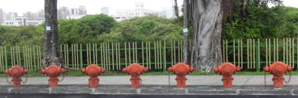 |
| seven unnumbered matte vermilion Round Heads |
| Lotus Cycle Track near the ramp down to Túnel para o Novo Campus da Universidade de Macau, Cotai |
| Photo taken in Y2026-M04 |
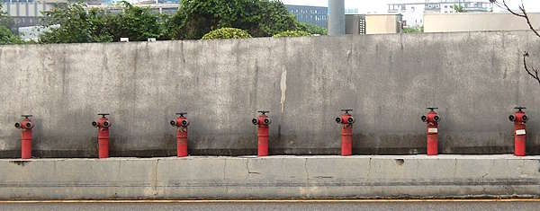 |
| seven fire services inlets |
| ramp down to Túnel para o Novo Campus da Universidade de Macau, Cotai |
| Photo taken in Y2026-M04 |
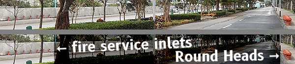 |
| wide view photo showing the seven fire services inlets (×7) on the left and seven unnumbered matte vermilion Round Heads on the right; original photo on top, annotated photo at the bottom |
| Lotus Cycle Track near the ramp down to Túnel para o Novo Campus da Universidade de Macau, Cotai |
| Photo taken in Y2026-M04 |
Looking at a map of the area, there isn't much going on in that area to justify the cluster of hydrants and inlets. My theory is that those fire service inlets might be used to distribute water to the University of Macau on the other side of Canal de Qixinxia on Hengqin Island through the road tunnel under the river, in case of fires. But then it begs the question: Why not just link up the water pipes underground? Because you would need fire fighters to get to the cycle track to link up the Round Heads and the inlets if my theory is true, which don't seem very efficient for firefighting. But eh, I am not a firefighting specialist, nor am I an engineer for waterworks, my speculations are as good as yours.
The Fire Services Museum in Macao
The Fire Services Museum in Macao displayed several fire hydrants, including a Round Head, Gooseneck (two-section variant), Bayard Emeraude (?), Mansions hydrant, underground hydrant (which I did not discuss in detail in this page because I didn't manage to photograph any on the streets), and other hydrant-related tools such as hydrant keys. According to the museum, the displayed hydrants are donated by the Macao Water Supply Company (also known by its abbreviated Portuguese name SAAM).
No booking is required and the admission is free (as of the time this page was published). Simply walk in and have a look around.
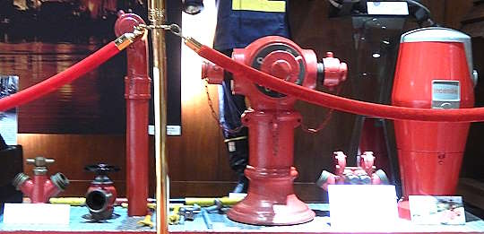 |
| Different types of fire hydrants used in Macao being displayed at the museum |
| Fire Services Museum (Macao) |
| Photo taken in Y2026-M04 |
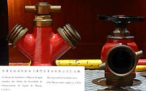 |
| Close-up photo of an underground type hydrant and a Mansions hydrant |
| Fire Services Museum (Macao) |
| Photo taken in Y2026-M04 |
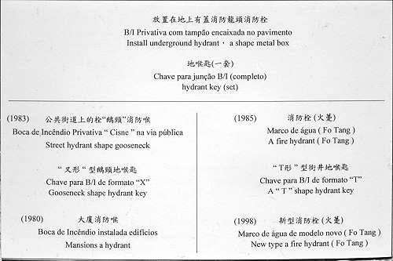 |
| Description of the displayed hydrants and related tools, with broken English |
| Fire Services Museum (Macao) |
| Photo taken in Y2026-M04 |